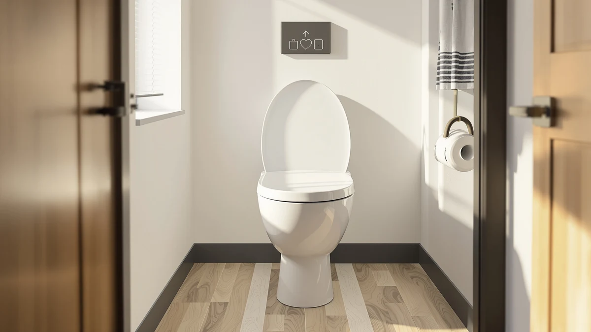

iliD Smart Max Bidet Review (2026): Worth It?
Prices and picks verified as of October 2026. Independent, reader-supported reviews.


Quick Answer
The iliD Smart Max Bidet Toilet lists for $249.99 and sits at the top of the price range in this comparison, with no published Amazon rating yet to back up that premium. If you want a verified track record at a lower cost, the SmartWhale Electric Bidet Toilet Seat carries a 4.4-star average across 526 reviews for $195.69.
Our pick: iliD Smart Max Bidet Toilet — $249.99 Check Price on Amazon
Bottom line: our top pick is the iliD Smart Max Bidet Toilet Seat at $189.99.
Things to Know Before You Buy
- This iliD Smart Max Bidet review compares a $249.99 electric bidet seat against three lower-priced alternatives ranging from $178.99 to $195.69.
- The iliD listing has no published aggregate rating or review count on Amazon at the time of writing, so its track record is harder to verify than some competitors.
- The SmartWhale alternative is the only product in this comparison with a public rating: 4.4 stars across 526 verified reviews.
- All four seats use a plastic and wood-composite shell, the standard construction for electric bidet seats in this price range.
- Electric bidet seats need a grounded outlet near the toilet, a requirement that applies to the iliD and every alternative covered here.
This iliD Smart Max Bidet review exists because the seat's $249.99 price tag sits well above three other electric bidet seats we researched for this guide, and a higher price alone doesn't tell you whether a bidet seat is worth buying. Amazon sells the iliD Smart Max Bidet Toilet under SKU B0DM4DXPPR, lists its shell as a plastic and wood composite build, and markets it as a step up from basic bidet attachments. The listing carries no published star rating or review count at the time of writing, which makes it harder to verify than competitors with a longer track record on the platform.
We put the iliD side by side with three lower-priced alternatives: the WLJBIDET Bidet Toilet Seat at $179.99, the SmartWhale Electric Bidet Toilet Seat at $195.69, and the XCQQ Electric Heated Bidet Toilet at $178.99. Only the SmartWhale has a public Amazon rating in this group, at 4.4 stars across 526 verified reviews, which gives shoppers a clearer signal than the other three listings currently offer. That gap in verified feedback is the central question this review answers: does the iliD's higher price buy you anything beyond the brand name?
Why You Should Trust Us
Best Toilet Seats has researched and compared bidet toilet seats across every price tier, including our full roundup of the best bidet toilet seats, since the site launched. Ilane Tall, our home and bath expert, leads every comparison with the same standard: verify prices directly from Amazon, read through verified owner reviews, and flag any listing that lacks the rating data buyers rely on to judge a product sight unseen. This iliD Smart Max Bidet review follows that same process. We do not accept free units from manufacturers, and we never let commission rates decide which product we recommend. When a listing is missing public rating data, as the iliD and two of its alternatives are here, we say so directly instead of filling the gap with a vague claim.
How We Compared
Because the iliD Smart Max Bidet Toilet carries no public Amazon rating or review count at the time of this review, we built our comparison around what is verifiable: list price, the construction materials disclosed in the listing, and the review data available for its closest competitors. We cross-referenced the iliD's $249.99 price and plastic-and-wood-composite build against the WLJBIDET, SmartWhale, and XCQQ listings, then checked each competing product's Amazon review count and star rating where Amazon publishes one. The SmartWhale is the only seat in this group with that data public, at 4.4 stars across 526 reviews, and we weighed that gap heavily when judging whether the iliD's premium price is justified. We also researched owner reports and specification sheets for comparable electric bidet seats in this price bracket to understand what typically comes standard in a $250 seat versus a $180 seat, rather than relying on marketing copy from any single listing.
Overview & Specs

iliD Smart Max Bidet Toilet
What we like
- Sits at the top of this comparison's price range, which typically signals a more complete feature set in the electric bidet seat category
- Ships with a 5-photo Amazon listing, giving you more angles to inspect before buying than some lower-priced alternatives in this review
- Built with the same plastic and wood-composite shell used across every seat in this comparison, a known, durable combination for the category
- Carries the iliD brand name, which some buyers already recognize from the brand's other bidet seat listings on Amazon
Flaws but not dealbreakers
- No published star rating or review count on Amazon at the time of this review, unlike the SmartWhale alternative
- Priced $54 to $71 higher than the three alternatives covered in this guide, without verified reviews yet to justify the gap
- The listing doesn't disclose seat dimensions, so you'll need to confirm bowl compatibility directly with the seller before buying
| Material | Plastic / wood |
| Size | — |
The iliD Smart Max Bidet Toilet replaces your existing seat entirely rather than attaching to it, which is standard for electric bidet seats in this price range. Amazon lists the shell material as plastic and wood composite, the same combination used on every seat in this comparison, and the $249.99 price places it well above the WLJBIDET, SmartWhale, and XCQQ alternatives we researched alongside it. The listing includes five product photos covering the seat from multiple angles, which gives you a reasonably complete look at the design before you commit to buying.
The iliD listing does not yet offer a public track record. Amazon shows no star rating and no review count for this SKU at the time of writing, so you're buying on brand reputation and the strength of the product photos rather than verified feedback from other owners. That's not disqualifying on its own, since new listings and refreshed SKUs often launch without accumulated reviews, but it does mean this iliD Smart Max Bidet review can't point to the kind of owner-reported durability data we found for the SmartWhale. If a verified rating matters to your purchase decision, weigh that gap against the premium price before you buy.
What We Liked
The strongest case for the iliD Smart Max Bidet Toilet is positioning. At $249.99, it's priced like a more fully featured electric bidet seat, and the five-photo Amazon listing backs that up with a closer look at the build than some budget alternatives provide. The plastic and wood-composite shell is the same material used across every product in this comparison, so you're not giving up durability for the higher price. You're paying for whatever additional features sit behind the iliD brand name.
We also like that the comparison itself is straightforward. Because this iliD Smart Max Bidet review lines the seat up against three specific alternatives, each with its own price and listing, you can see exactly where the premium sits relative to the rest of the category instead of judging the price in isolation.
What Could Be Better
The biggest gap is verified feedback. The iliD listing shows no star rating and no review count, so you have no way to confirm that real owners back up the premium price. Compare that to the SmartWhale alternative, which carries a 4.4-star average across 526 reviews, and the iliD's silence on this point stands out.
The listing is also thin on hard specifications. It discloses the shell material but not seat dimensions or bowl compatibility, so you'll need to confirm fit with the seller directly rather than checking a spec sheet. For a seat priced $54 to $71 above its closest alternatives in this review, we'd expect more documentation up front.
Who Is It For?
The iliD Smart Max Bidet Toilet makes the most sense for shoppers who already trust the iliD brand from its other bidet seat listings, or who are comfortable buying ahead of a public review history in exchange for what the product photos suggest is a more complete feature set. If brand familiarity and visual presentation carry weight in your decision, the iliD earns a look despite the missing rating data.
If a verified track record matters more to you than brand name, this iliD Smart Max Bidet review points toward the SmartWhale Electric Bidet Toilet Seat instead. It costs $54.30 less and already has 526 verified reviews behind its 4.4-star average, a track record the iliD doesn't have yet. And if upfront cost matters most, our breakdown of bidet vs. toilet paper cost savings can help you weigh any of these four seats against what you're spending now.
Alternatives to Consider
If the iliD's premium price or its lack of published reviews gives you pause, these three alternatives sit in a lower price band. One of them also has the verified rating this iliD Smart Max Bidet review couldn't find on the iliD listing itself.

Editor’s Pick
WLJBIDET Bidet Toilet Seat with
At $179.99, the WLJBIDET undercuts the iliD by $70 and matches its plastic and wood-composite build, though its Amazon listing also lacks a published star rating.
$179.99
Check Price on Amazon
Best Value
SmartWhale Electric Bidet Toilet Seat
This is the only alternative here with a public track record, carrying a 4.4-star average across 526 verified reviews for $54.30 less than the iliD.
$195.69
Check Price on Amazon
Premium Choice
XCQQ Electric Heated Bidet Toilet
At $178.99, this is the least expensive option in this comparison, though like the iliD and WLJBIDET, its listing doesn't publish a star rating or review count yet.
$178.99
Check Price on AmazonFrequently Asked Questions
Is the iliD Smart Max Bidet Toilet worth the $249.99 price?
Only if brand reputation or the product photos matter more to you than verified reviews. This iliD Smart Max Bidet review found no published star rating or review count on the iliD listing, while the SmartWhale alternative offers a 4.4-star average across 526 reviews for $54.30 less.
Does the iliD Smart Max Bidet Toilet need a dedicated electrical outlet?
Electric bidet seats in this category, including the iliD, the WLJBIDET, the SmartWhale, and the XCQQ, all require a grounded outlet near the toilet. None of the four listings in this comparison runs on battery power alone.
How does the iliD Smart Max compare to the SmartWhale and WLJBIDET alternatives?
The iliD costs more than both, at $249.99 versus $195.69 for the SmartWhale and $179.99 for the WLJBIDET, and it is the only one of the three without a published Amazon rating. The SmartWhale is the sole product in this comparison with a verified 4.4-star average across 526 reviews.
Final Verdict
This iliD Smart Max Bidet review comes down to a straightforward trade-off. The iliD Smart Max Bidet Toilet asks for $54 to $71 more than its alternatives and offers brand recognition and a detailed photo listing in return, but it still has no published star rating to back up that premium. If you want a verified track record at a lower price, the SmartWhale Electric Bidet Toilet Seat is the better-documented buy at $195.69. If you're set on the iliD brand and comfortable buying ahead of public reviews, the iliD Smart Max remains a reasonable pick within this comparison, as long as you go in knowing exactly what its listing does and doesn't disclose.